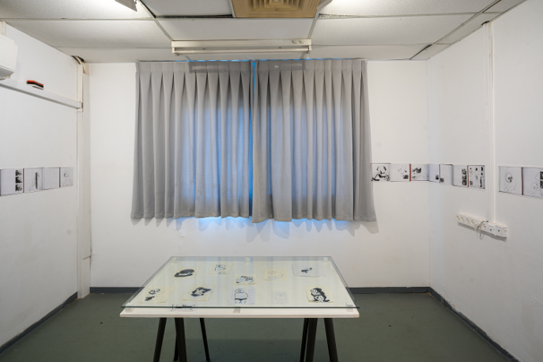
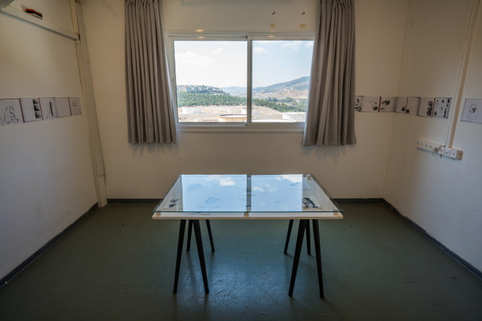
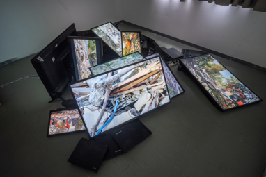
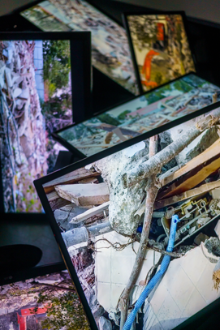
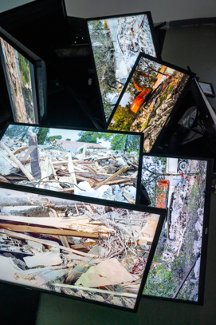
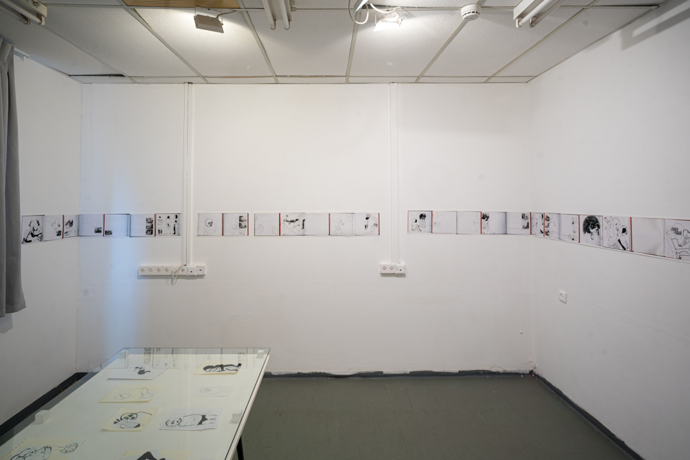
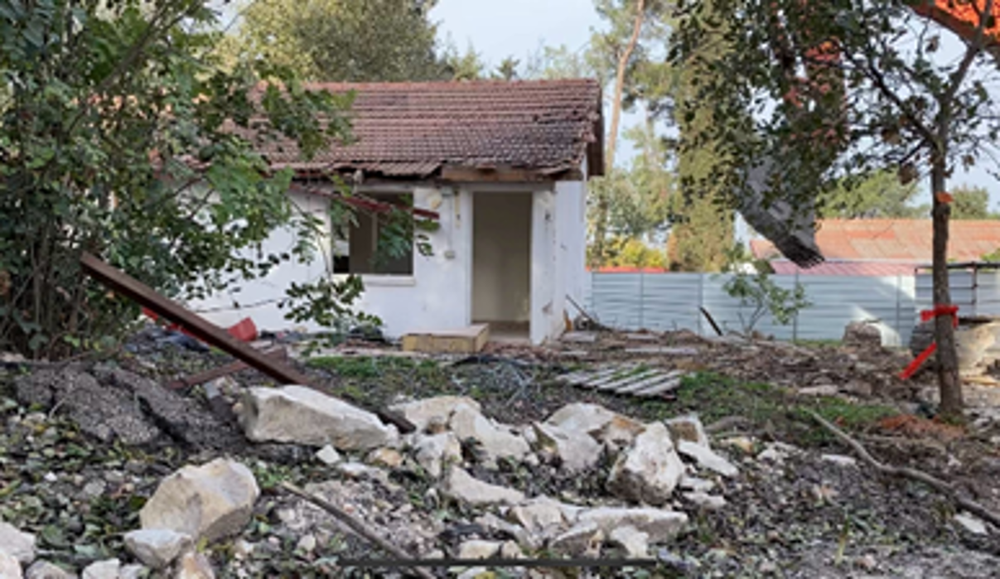
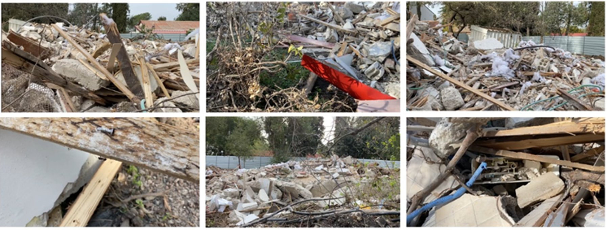
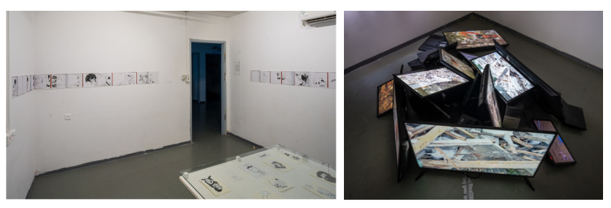
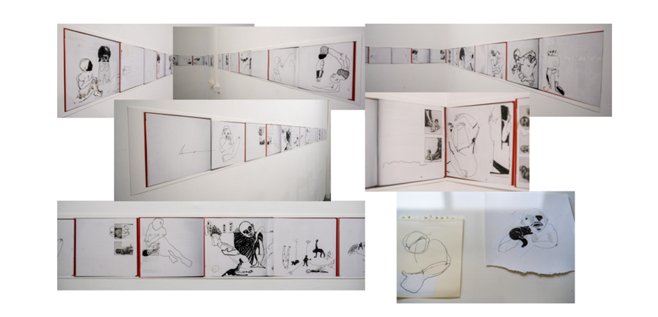

הצהרת אמנית
העבודות שלי מאופיינות בקו עדין, הרמוני ונעים, שעומד בסתירה לתוכן המצוייר, שמתאר יחסים מורכבים שמבטאים בין היתר מצבים של טפילות, פלישה, וחוסר יציבות. הרישום מתעתע, מכיל הומור וכאב. הווידיאו תמיד ליווה את העבודה שלי מאחורי הקלעים, קל היה לי לחשוב בעזרתו ולזקק רעיונות אבל בסופו של דבר הצגתי את הרישומים, בתערוכה האחרונה שלי, לדוג את הטיפות שהצגתי בסיום התואר השני באורנים, הוידיאו קיבל מקום משמעותי, התחושות של הגוף שלי האוחז, מתאמץ, נאבק, מתעד. עזרו לי לדייק את העיסוק שלי בשאלה האחיזה, ובשאלות של שליטה ואובדן שליטה. אני עוסקת בפעולות פשוטות, מרימה את הטלפון ומתעדת, אבל אופן התיעוד והבחירה בנושא טומנות בתוכן תהליכים רגשיים ומורכבים, הקשורים לבנייה והרס גם יחד. החיפוש שלי מונע מתחושת "זמזום פנימי", תחושת דריכות, תזוזה, מאבק. בעבר ראיתי בזמזום הזה תופעה מסתורית, אך לאורך השנים גיליתי שהוא מגלם את המתח בין כוחות ההחזקה והרצון לשמוט. העבודות שלי נולדות מתוך תחושת ערפל, מתוך אי סדר, אני "פוגשת" את הדימוי פעם ראשונה על הדף- הוא לא נמצא אצלי בראש לפני-אני יוצרת קו ומגיבה אליו עד שאני מגלה את הדמות שמופיעה מולי. אני מרגישה שהעבודות שלי מיישירות מבט אל הכואב והפצוע בחברה שלנו, מתבוננות בסבל והתמודדות, אבל יש בקו העדין והנעים גם נחמה, יש ביופי של הוידיאו גם הרמוניה לצד הכאב, אני מביאה את הכאב כמו שהוא, מצד אחד נוכח, כבד ומגושם ומצד שני גם עטוף, ועדין.
קורות חיים אמנותיים
השכלה
- 2023–2024 – תואר שני רב תחומי במסלול אמנית־מורה, המכללה האקדמית לחינוך אורנים
- 2012–2013 – לימודי המשך באמנות, המדרשה לאמנות, בית ברל
- 2006–2010 – B.Ed באמנות + תעודת הוראה (א–י"ב), המכון לאמנות, מכללת אורנים סיום בהצטיינות יתרה
תערוכות נבחרות
- 2024 – לדוג את הטיפות, תערוכת גמר תואר שני, אורנים | מנחה: הילה בן ארי | אוצר: פאריד אבו שאקרה
- 2018 – תחריטים – סדרות וספרי אמן, הגלריה לאמנות נצרת | אוצרת: טלי כהן גרבוז
- 2014 – אחיזה, גלריית החללית, תל אביב | אוצרת: שרי גולן
- 2013 – שששששש, הגלריה לאמנות ישראלית, כברי | אוצרת: דרורה דקל
- 2012 – Low Tech, ואדי ניסנאס, חיפה | אוצרות: דורית רינגרט ושרון פוליאקין
- 2011 – אבני רוח, גלריה דניאל, תל אביב | אוצר: שרון תובל
- 2011 – תערוכת תחריט, גלריה שהם, תל אביב | אוצרת: עדינה קיי
- 2010 – תערוכה זוגית, הגלריה העירונית ראשון לציון | אוצרת: אפי גן
- 2010 – לצלול עם מצופים, תערוכת גמר תואר ראשון, אורנים | אוצרת: ענת גטניו
פרסים
- 2010 – פרס קרן התרבות אמריקה–ישראל
הרצאות / סדנאות
- 2018 – הרצאה במכון הפסיכואנליטי, תל אביב בנושא רישום בספרי סקיצות
- 2023 – כנס לאומנות נשים ומגדר באוניברסיטת ת"א, הרצאה משותפת עם ד"ר אלה קריגר בנושא עבודת הדחפור
אוספים
עבודותיי נרכשו על ידי מספר אספנים פרטיים בישראל
עבודות נבחרות (יוכנס בהמשך)
- שם התערוכה: "לצלול עם מצופים"- תערוכת בוגרות המכון לאומנות אורנים.
- מיצב רישומי, 2010
- טקסט הפרויקט כולל כמה מקבצים של רישומים.
- רוב הרישומים נעשו בספרי סקיצות ברישום קווי של עט שחור על נייר.
- בפרויקט מוצגים כ-70 רישומים שנבחרו מתוך כ-2,000 רישומים משלוש השנים האחרונות.
- את הרישומים חילקנו לקבוצות: קבוצת האמהות, קבוצת הקרקס, קבוצת הדחויים וסדרת רישומים מספר סקיצות אחד. לקבוצות נוספו סדרת תחריטים שנעשו בשנה האחרונה ונתלו יחד עם הרישומים לפי הקבוצות.
- בנוסף הוצגו ציור אישה על דלת. צמד מדפי ברזל עם נושאים ציוניים. שלוש עבודות רישום בתוכנת "פלאש". ועבודת פלסטלינה שנעשתה על קיר שבמרכזו קיר לבנים חשוף של לוליינית שהולכת על חבל לעבר לועו של תנין...
- את הרישומים תליתי על שלושה קירות, חלקם היו ממוסגרים מסגרת לבנה ורובם מכוסים זכוכית בלבד.
- רציתי ליצור תחושה בה האלמנטים המוצגים מרחפים בחלל, כמו תחושת הריחוף המאפיינת אותם כאשר הם מופיעים בספר הסקיצות שלי.
- עבודות הרישום עטפו את החלל, הציור שעל הדלת מהווה מעבר מהרישום למדיומים האחרים שכולם רוכזו על קיר הכניסה.
רשימת תערוכות
- 
- 
- 
- 
- 
- 
- 
- 
- 
- 


התערוכה בנויה משני חללים סמוכים העוסקים בתמות של החזקה ופלישה. בחלל האחד מוצבת ערימה של מסכי טלוויזיה ומחשב המקרינים סרטונים דוקומנטריים מחצר הריסה; הצופים נעים בזהירות בחדר החשוך והצפוף סביב הערימה, החשופה מכל צד. בחלל השני, המואר באור חם, מוצגים רישומים שנסרקו מתוך ספר ההדרכה "תינוק גדל באהבה", עליו התבצע רישום בקו שחור עם שכבות של טיפקס, מדבקות וכתב דפוס. הרישומים הודפסו בפס רציף העוטף את החדר בגובה נמוך, לצד רישומים מקוריים בוויטרינה. שתי העבודות, השונות באופיין, מבקשות מהצופה תנועה מעגלית ומתמקדות במתח שבין כיסוי לחשיפה, בין אחיזה להתפרקות.
"תינוק גדל באהבה", ספר מטופל, עט, טוש אקרילי, טיפקס ומדבקות על גבי דפי הספר. 25*20 ס"מ,
נובמבר 2023
את הספר יצרתי אחרי קיפאון של כמה שבועות, בתגובה לטבח ה-7.10
תערוכת בוגרות המכון לאומנות אורנים מיצב רישומי, 2010 התערוכה כללה כ-70 רישומים נבחרים מתוך כ-2,000 רישומים שנעשו בשלוש השנים שקדמו לתערוכה. רובם בעט שחור על נייר בספרי סקיצות. הרישומים חולקו לקבוצות נושאיות: קבוצת האמהות, הקרקס, הדחויים וסדרת רישומים מספר סקיצות אחד, לצד סדרת תחריטים שנתלתה בהתאם לקבוצות. העבודות הוצגו על שלושה קירות, חלקן ממוסגרות וחלקן מכוסות זכוכית בלבד, ליצירת תחושת ריחוף. בקיר הכניסה הוצגו עבודות ממדיומים נוספים: ציור על דלת, עבודות דיגיטליות בפלאש, צמד מדפי ברזל ועבודת פלסטלינה תלוית קיר.
גלריה לאומנות ישראלית - קיבוץ כברי - 2013